Send Apple Card transactions to Firefly III
WalletFeed sends your Apple Card, Apple Cash and Savings transactions from your iPhone to one account on your Firefly III server. You make a personal access token in Firefly III. Then you paste the token in WalletFeed and type the address of your server.
Download WalletFeed on the App Store
Before you start
You must have these items:
- An iPhone with iOS 26 or a newer version. WalletFeed is available only in the US.
- Apple Card, Apple Cash or Savings in Wallet on that iPhone, and WalletFeed with access to your Wallet accounts.
- WalletFeed Pro, which is necessary for destinations. WalletFeed Pro is a subscription with a 1-week free trial, or a one-time Lifetime purchase.
- Your Firefly III server, and a user account on it.
- An
https://address for the server, with a certificate that iOS accepts. Your iPhone must connect to this address from all locations, and not only from your home Wi-Fi.
WalletFeed cannot use an http:// address. The Firefly III image for Docker uses http:// on port 8080. To get an https:// address with a certificate that iOS accepts, you can use one of these:
- Tailscale HTTPS, with a
.ts.netaddress - A reverse proxy with a certificate from Let's Encrypt
- Cloudflare Tunnel.
You can also make a root certificate and install it on your iPhone. If you use a root certificate, you must set the switch for that certificate to on in Settings › General › About › Certificate Trust Settings.
WalletFeed sends the time of each transaction as the time on your iPhone. This time has no time zone. Firefly III reads the time in the time zone of the server. If the server time is before the time on your iPhone, a new transaction can have a time after the server time. As a result, Firefly III does not include the transaction in Current balance for some hours.
To prevent this problem, you can set TZ in the configuration of the server to your time zone. If TZ has no value, Firefly III uses UTC.
Your token stays on your iPhone
- WalletFeed keeps the personal access token in the Keychain on your iPhone. iOS encrypts the Keychain.
- The personal access token does not go to iCloud Keychain or to your other devices.
- WalletFeed has no account, and no WalletFeed server keeps the personal access token. No person at WalletFeed can see or get the personal access token.
- Your iPhone sends the personal access token only to your Firefly III server, in each request to your Firefly III server.
- When you delete the destination, WalletFeed deletes the personal access token from your iPhone. You can also delete the token in Firefly III.
Step 1: Make a personal access token in Firefly III
You can do these steps on a computer, or in Safari on your iPhone. With Universal Clipboard, you can copy the token on a Mac and paste it on your iPhone.
-
On your computer, get access to your Firefly III account in a web browser.
-
Click the person icon at the top right of the page (the icon has no text).
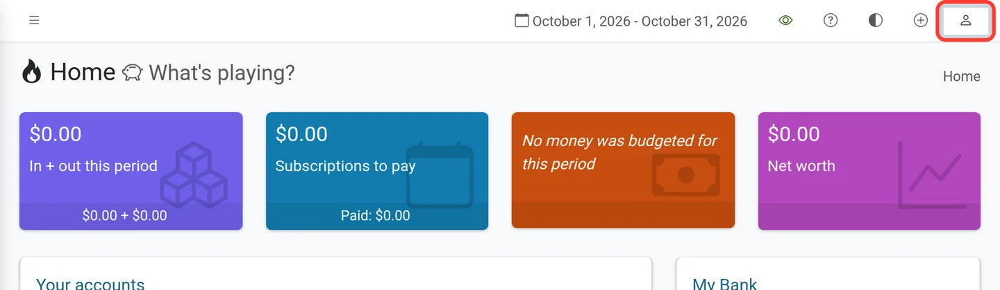
-
Click Remote access and tokens.
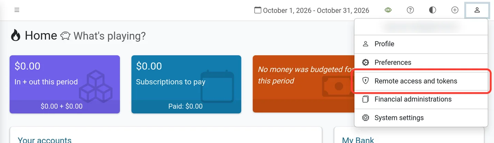
-
In the Personal Access Tokens section, click Create new token.
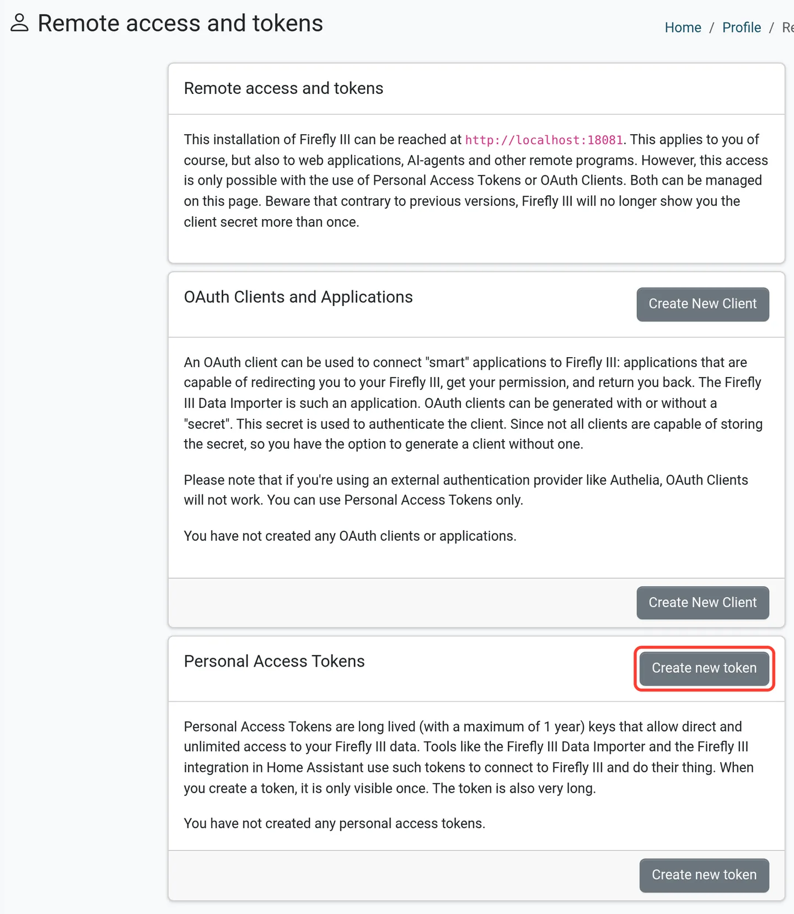
Do not click Create New Client in the OAuth Clients and Applications section. WalletFeed does not use OAuth clients.
-
In the Name field, type
WalletFeed. -
Click Create.
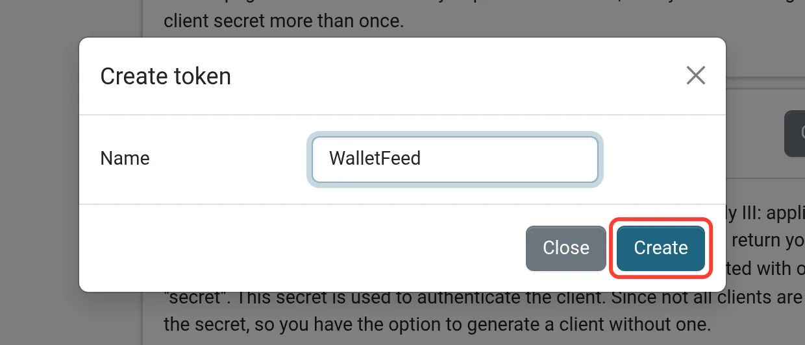
-
Click in the large text box that shows the token.
-
To select all the text in the box, press Command-A on a Mac, or Ctrl-A on a Windows computer.
-
To copy the text, press Command-C on a Mac, or Ctrl-C on a Windows computer.
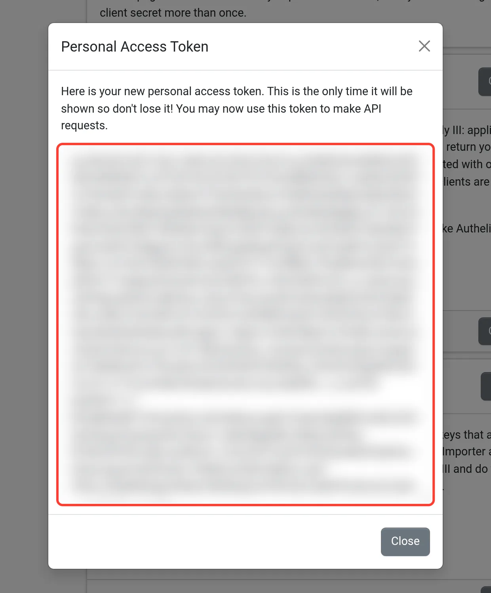
-
Click Close.
Step 2: Add Firefly III in WalletFeed
-
On your iPhone, open WalletFeed.
-
Tap Destinations.
-
Tap + at the top of the screen.
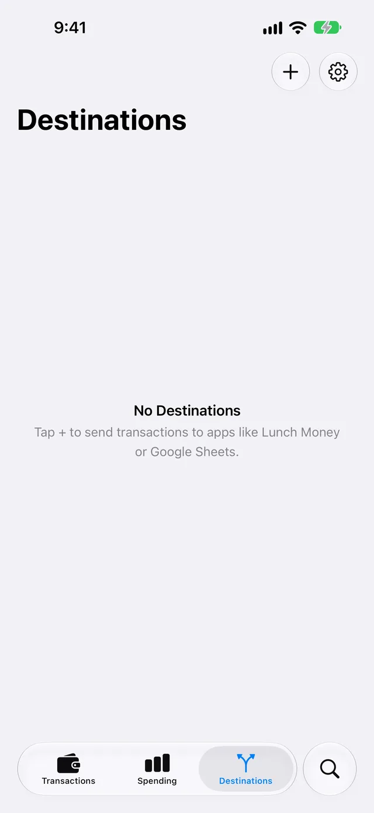
-
In the Budgeting section, tap Firefly III.
If you do not have WalletFeed Pro, WalletFeed first shows the WalletFeed Pro screen. After you get WalletFeed Pro, WalletFeed shows the Firefly III screen.
-
Paste the token in the Personal Access Token field.
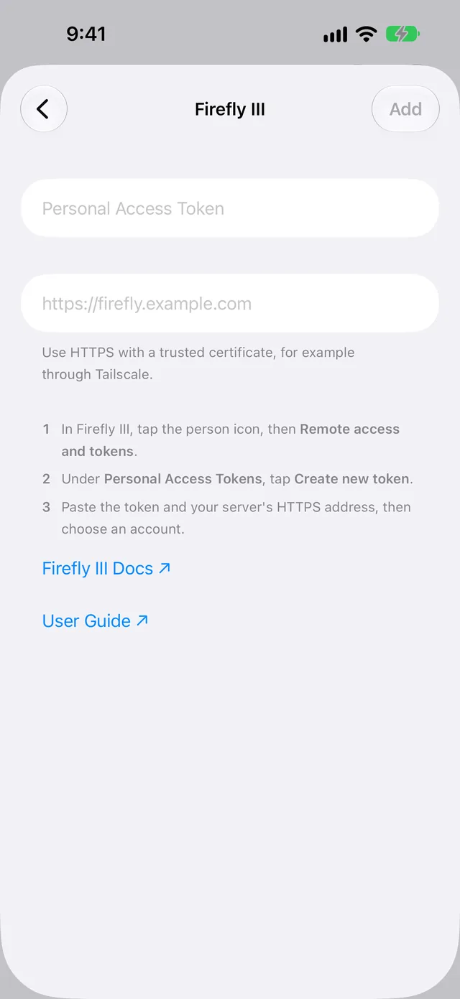
-
In the field that shows
https://firefly.example.com, type the address that you use to open Firefly III in a web browser.After you type the address, WalletFeed makes sure that the token and the address are correct. If they are correct, WalletFeed shows Account. If they are not correct, WalletFeed shows an error message (refer to If there is a problem). WalletFeed removes a
/,/apior/api/v1at the end of the address. -
If you made an account for your card in Firefly III, select that account in Account.
Account shows the active asset accounts and liabilities in Firefly III. If one of these accounts has the name Apple Card, WalletFeed selects it, and New Apple Card is not in the list.
If Firefly III has no account with the name Apple Card, WalletFeed selects New Apple Card. With New Apple Card, WalletFeed makes an asset account with the name Apple Card in Firefly III. This account has the role Credit card and the currency US dollars.
-
Tap Add.
-
When WalletFeed shows Send Transactions to Firefly III?, tap Send.
The message tells you which data Firefly III receives, from which Wallet accounts and from which date. If you tap Cancel, WalletFeed removes the destination and does not send data. If WalletFeed made the Apple Card account, this account stays in Firefly III.
After Cancel, the Firefly III form stays open, and Account shows the Apple Card account. When you tap Add again, WalletFeed does not make a second account.
WalletFeed adds Firefly III · Apple Card to Destinations and starts to send your transactions. WalletFeed keeps the token in the Keychain on your iPhone.
Step 3: Find your transactions in Firefly III
-
On your computer, in the Firefly III sidebar, click Accounts.
-
Click Asset accounts.
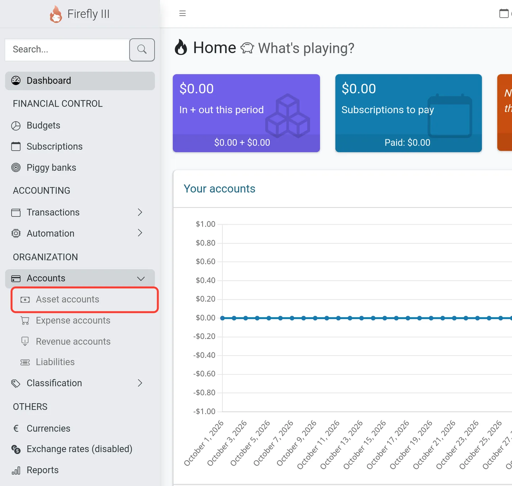
-
Click Apple Card (the account with the role Credit card).
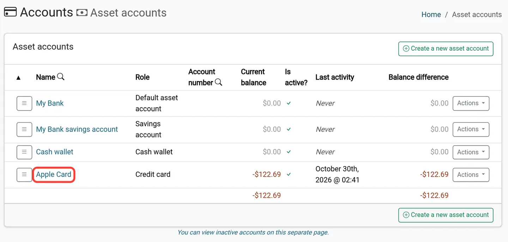
-
Look at the Transactions section on the Apple Card page.
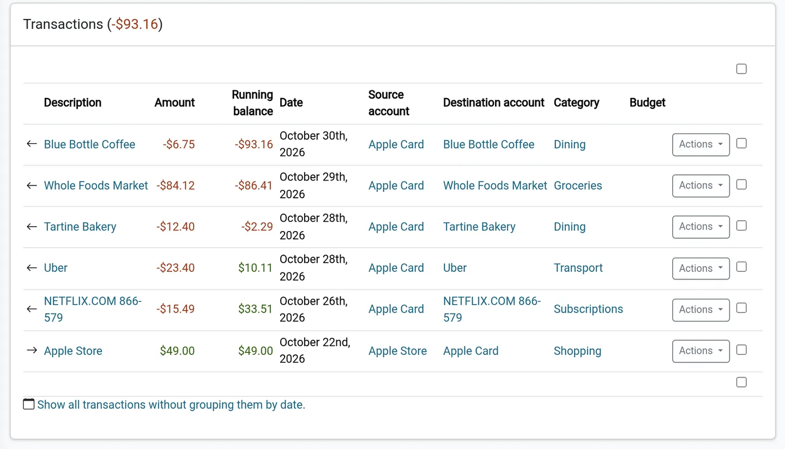
Data that Firefly III receives
WalletFeed puts all of your transactions in one Firefly III account. These transactions come from each Wallet account that WalletFeed has access to. This table shows the Firefly III field for each Wallet field.
| Wallet | Firefly III |
|---|---|
| A purchase | A withdrawal from your account to an expense account |
| A refund or a different credit | A deposit to your account from a revenue account |
| Merchant | The name of the expense account or revenue account. If Wallet has no merchant, WalletFeed uses the description. |
| Amount | Amount, with two decimals |
| Date | Date, with the time on your iPhone |
| Posted date | Book date |
| Description | Description. If Wallet has no description, WalletFeed uses the merchant. |
| Category, but not Other | Category. If the category is new, Firefly III adds it. |
| Amount in a foreign currency | Foreign amount and foreign currency |
| Card statement text, merchant category code, transaction type, foreign amount and exchange rate | Notes |
| The WalletFeed ID of the transaction | External ID |
| No Wallet field | The walletfeed tag. A pending charge also has the pending tag. |
The notes show the foreign amount with all of its decimals, for example 1500 JPY or 12.345 KWD.
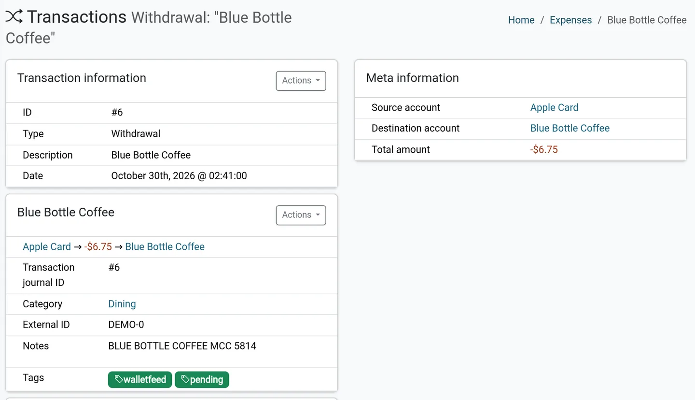
WalletFeed sets the category and the notes only when it adds a transaction. When WalletFeed updates a transaction, it changes only the amounts, the dates and the pending tag. Your changes to the description, the category, the notes and your tags stay.
Firefly III receives a payment to your card as a deposit from a revenue account. In Firefly III, you can change this deposit to a transfer. A rule can also make this change, because Firefly III uses your rules on each new transaction.
If Firefly III does not have the foreign currency, WalletFeed sends the transaction again without the foreign amount. The notes also show the foreign amount.
Your transactions go from your iPhone directly to your Firefly III server. WalletFeed has no account, and no WalletFeed server keeps your transactions or keys.
New and changed transactions
While WalletFeed is open, Firefly III receives changes in seconds. When WalletFeed is not open, iOS starts WalletFeed approximately 1 hour or less after a change in Wallet. If Background Sync is on in Settings › Sync, WalletFeed then sends the change.
WalletFeed sends a pending charge to Firefly III with the pending tag. When Wallet shows the charge as posted, WalletFeed updates the same transaction and removes the pending tag. If Wallet shows a charge as declined or expired, WalletFeed deletes the transaction in Firefly III. WalletFeed deletes only transactions from the last 90 days. If you moved a transaction to a different account in Firefly III, WalletFeed does not delete it.
If Firefly III does not accept a change, WalletFeed tries to send that change again when it subsequently sends changes.
Send previous transactions
A new destination also receives previous transactions from the start date in Settings › Sync › Initial History. Initial History is All until you change it. To change it, do these steps before you add Firefly III:
-
In WalletFeed, tap Settings (the gear button) at the top of the screen.
-
In the Sync section, tap Initial History.

-
Select Today, 30 Days, 90 Days, 1 Year or All.
To send more previous transactions to your Firefly III destination, use Send History:
- In Destinations, tap your Firefly III destination (for example, Firefly III · Apple Card).
- Tap Send History.
- Select 30 Days, 90 Days, 1 Year or All.
Before WalletFeed adds a transaction, it looks for the External ID of the transaction in your Firefly III account. It looks from 3 days before the date of the transaction to 3 days after that date. Thus, WalletFeed does not add a transaction two times. If you moved the date of a transaction in Firefly III by more than 3 days, Send History can add the transaction again.
If you delete a transaction in Firefly III, Send History does not add it again. If Wallet subsequently changes the amount of that transaction, WalletFeed adds the transaction again.
While WalletFeed sends the transactions, the destination shows Sending History and a progress bar.
To stop Send History, tap Send History › Stop Sending.
Change or remove the destination
In Destinations, tap your Firefly III destination. Then use this table:
| Change | On the destination screen |
|---|---|
| Stop the destination for a time | Set Enabled to off. |
| Send only some transactions | Set Filter to on. Then set Include, Minimum, Include Pending, Accounts, Categories or Exclude. |
| Send transactions from only one Wallet account (for example, Apple Card) | Set Filter to on. Then select the account in Accounts. |
| Use a new token | Tap Replace Token. Paste the new token. Then tap Replace. WalletFeed makes sure that Firefly III accepts the token. |
| Make sure that WalletFeed can send | Tap Send Test. Firefly III receives a test withdrawal of $4.20 with the merchant WalletFeed. You can delete this withdrawal in Firefly III. |
| Remove the destination | Tap Delete. Then tap Delete again. The transactions that WalletFeed sent stay in Firefly III. |
For more information about the filter, refer to Choose what a destination receives.
Replace the token after one year
You can use a personal access token for one year. In Firefly III, Expires at shows the last date that you can use the token.
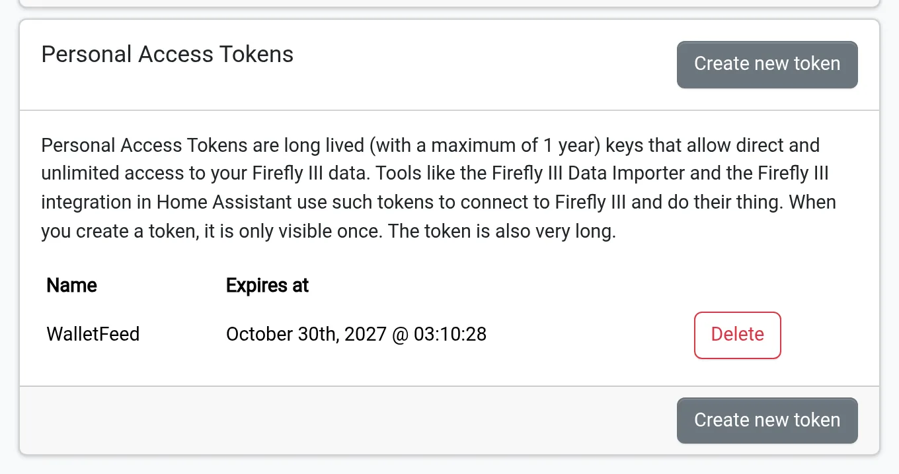
- Make a new token (refer to step 1).
- In WalletFeed, on the destination screen, tap Replace Token.
- Paste the new token.
- Tap Replace.
Delete the token in Firefly III
When you remove the destination, the token stays in Firefly III. To delete the token, do these steps:
-
In Firefly III, click the person icon.
-
Click Remote access and tokens.
-
In the WalletFeed row of Personal Access Tokens, click Delete.
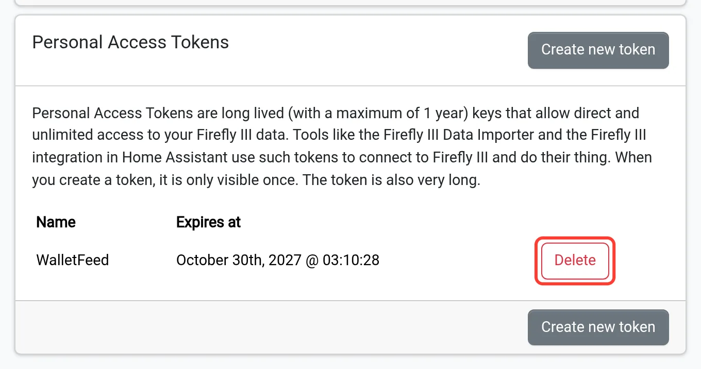
When you click Delete, Firefly III deletes the token and does not show a message first. The row stays on the page until you load the page again.
If there is a problem
If WalletFeed shows "Use your server's HTTPS address."
The address does not use https://. For example, it starts with http://.
- If your server has no
https://address, get anhttps://address for it (refer to Before you start). - Type the
https://address of your server.
If WalletFeed shows "iOS doesn't trust your server's certificate."
iOS does not accept the certificate of your server. WalletFeed shows this message for a self-signed certificate.
- Give your server a certificate that iOS accepts (refer to Before you start).
If WalletFeed shows "Can't reach your server."
Your iPhone cannot connect to the address. WalletFeed cannot use localhost or an address on your home network (for example, 192.168.1.20).
- Use an
https://address that your iPhone can connect to from all locations.
If WalletFeed shows "No Firefly III API at this address."
The address is not the address of your Firefly III server.
- Type the address that you use to open Firefly III in a web browser.
If WalletFeed shows "Token rejected (HTTP 401)"
Firefly III does not accept the token. Possible causes are a deleted token, an expired token or a token that you did not copy fully. The message can also show 403.
- Make a new token (refer to step 1).
- Make sure that you copied all of the token.
- Paste the new token in the Personal Access Token field.
If you closed the token dialog before you copied the token
Firefly III shows a token only one time.
- In Personal Access Tokens, click Delete in the row of the token that you did not copy.
- Make a new token (refer to step 1).
If the destination shows "Authentication failed"
Firefly III does not accept the token. Possible causes are an expired token or a token that you deleted in Firefly III. While WalletFeed sends previous transactions, the destination also shows "Authentication failed. Replace the token."
- Make a new token (refer to step 1).
- In WalletFeed, on the destination screen, tap Replace Token.
- Paste the new token.
- Tap Replace.
If the destination shows "Can't connect"
Your iPhone cannot connect to the server. This can occur when your iPhone is not on your home Wi-Fi. WalletFeed tries to connect again when it subsequently sends changes.
- Make sure that your iPhone can open the
https://address of the server from all locations.
If a new transaction is not in Current balance
The server time is before the time on your iPhone. As a result, the transaction has a time after the server time.
- Set
TZin the configuration of the server to your time zone.
 Scan with your iPhone
Scan with your iPhone
Related
Updated November 16, 2026